Radiology got to the collection first. Under the x-ray the wax burns away and the armature shows: child skeletons at their desks, a wire choir, a reception of ribs. Same rooms, same poses, one layer down. Please remain still for the exposure.
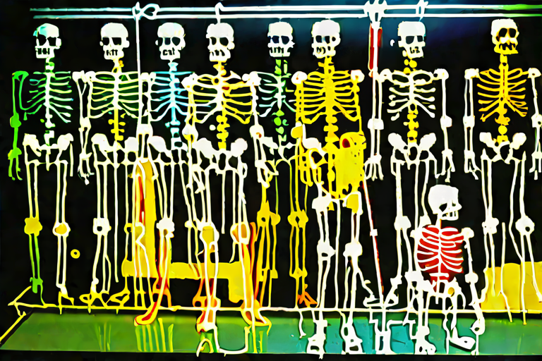
Cat. No. XI.4.01Class of BonesLatent diffusion, single pass · AI Slop, 2026
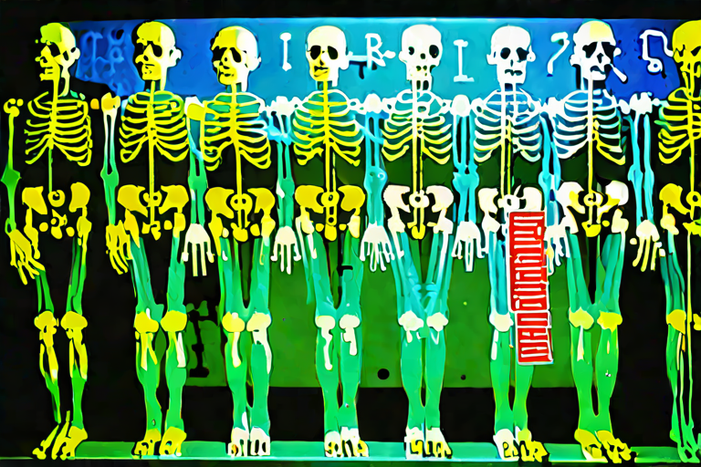
Cat. No. XI.4.02Roll Call, X-RayedLatent diffusion, single pass · AI Slop, 2026
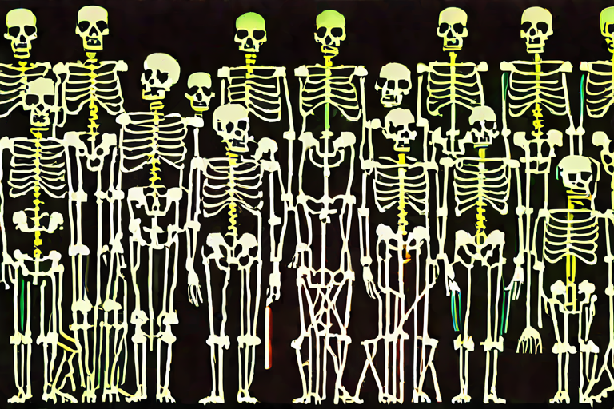
Cat. No. XI.4.03The Wire ChoirLatent diffusion, single pass · AI Slop, 2026
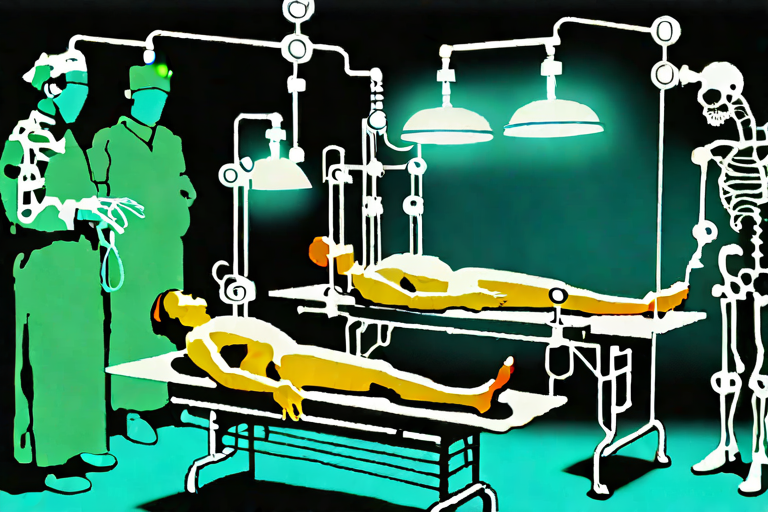
Cat. No. XI.4.04Blue SurgeryLatent diffusion, single pass · AI Slop, 2026
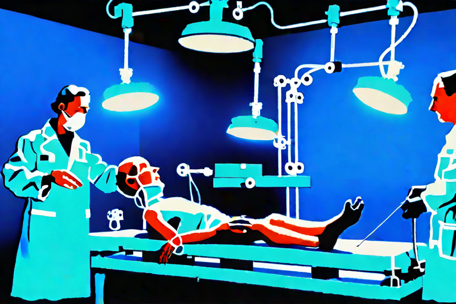
Cat. No. XI.4.05Second OpinionLatent diffusion, single pass · AI Slop, 2026
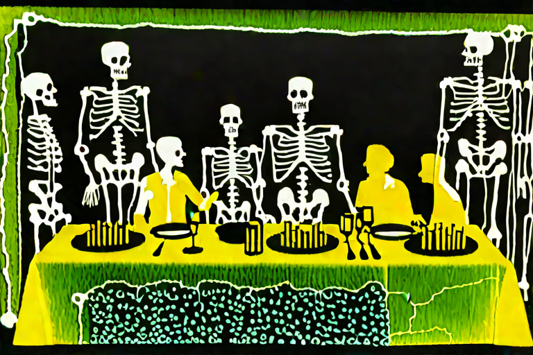
Cat. No. XI.4.06The Frame Beneath the FeastLatent diffusion, single pass · AI Slop, 2026
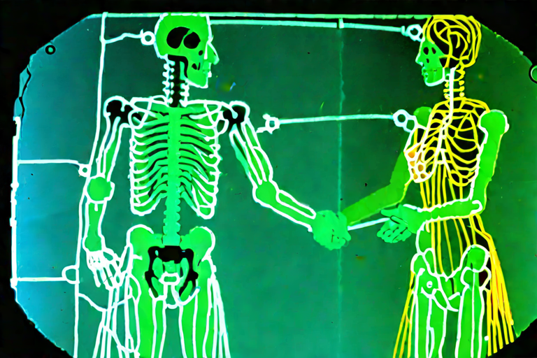
Cat. No. XI.4.07Bone of My BoneLatent diffusion, single pass · AI Slop, 2026
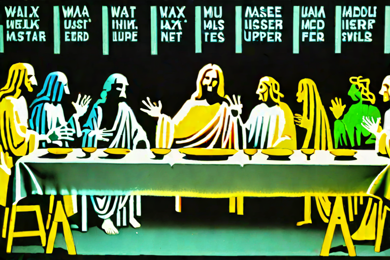
Cat. No. XI.4.08Thirteen RibsLatent diffusion, single pass · AI Slop, 2026
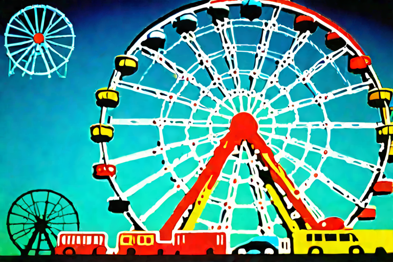
Cat. No. XI.4.09Every Car OccupiedLatent diffusion, single pass · AI Slop, 2026
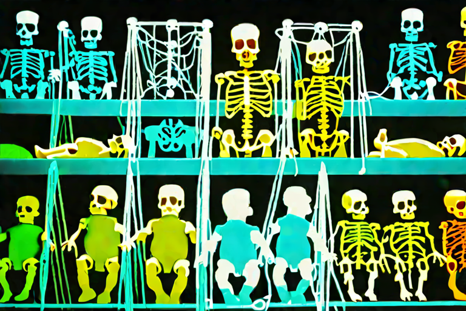
Cat. No. XI.4.10The Small WardLatent diffusion, single pass · AI Slop, 2026
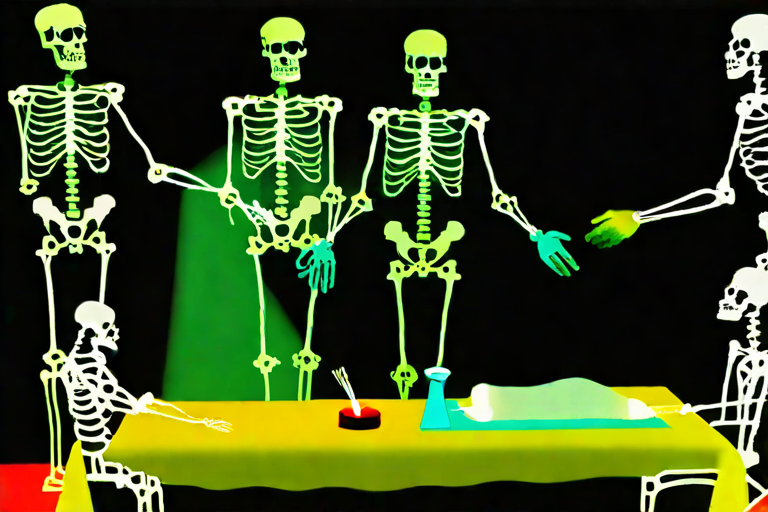
Cat. No. XI.4.11Hands, Still JoinedLatent diffusion, single pass · AI Slop, 2026
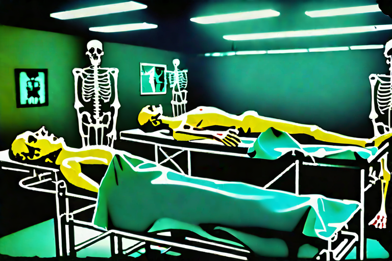
Cat. No. XI.4.12Steel and BoneLatent diffusion, single pass · AI Slop, 2026